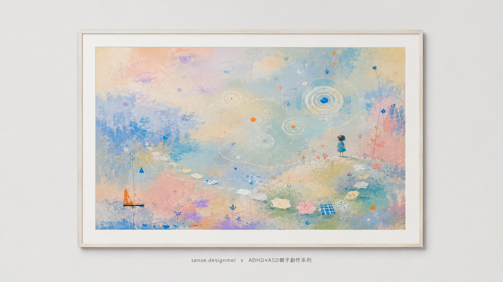

他不是故意的
ADHD × ASD 特質認識小工具
你是不是也常常在想——
「他到底是故意的，還是真的做不到？」
這裡有 12 個很多家長都熟悉的日常情境。花三分鐘，陪自己看看你家的孩子，也看看他比較像哪一種小角色。
這不是為了替孩子貼標籤，而是幫你多懂他一點，也讓你知道——你不孤單。
請先讀這個：這是一個認識與陪伴的小工具，不是診斷。
勾選結果不能代替專業判斷。真正的 ADHD／ASD 評估，一定要由
兒童心智科醫師或臨床心理師透過完整衡鑑進行。
如果這些情境讓你或孩子感到辛苦，請帶著它去找專業聊聊。